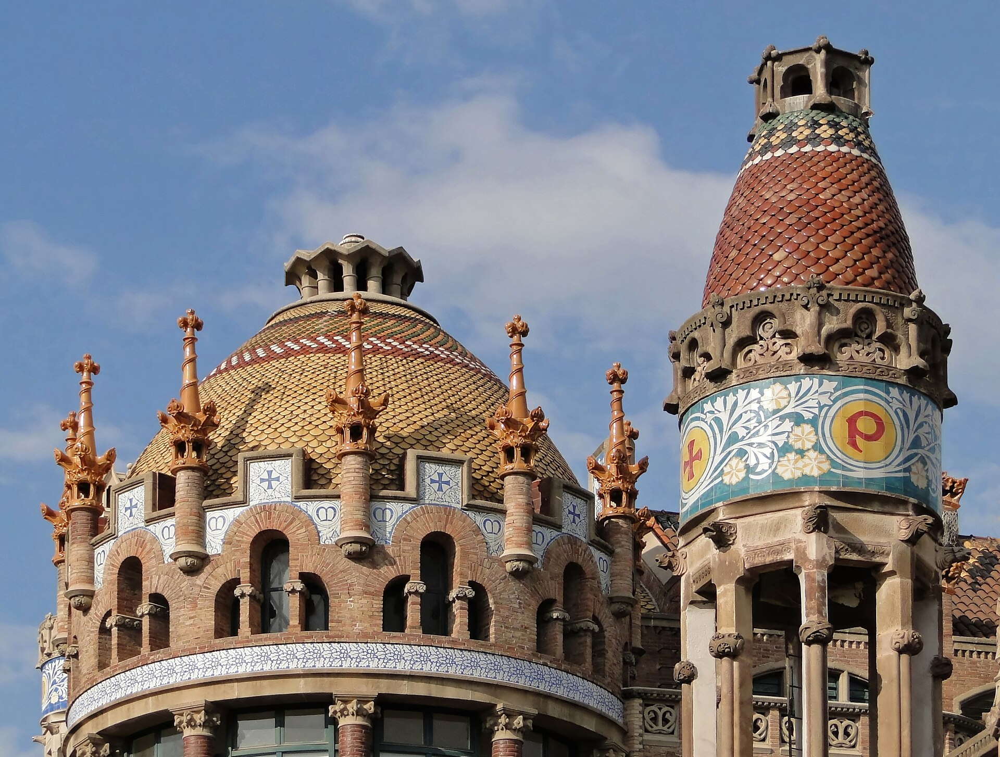

Foto: Bernard Gagnon · CC BY-SA 3.0 · Wikimedia Commons
Hospital de Sant Pau
Durata consigliata: 30 min esterno / 1,5 ore con interniIl più grande complesso in stile modernista al mondo, patrimonio UNESCO. Progettato da Domènech i Montaner come una "città-giardino" della cura, con padiglioni decoratissimi immersi nel verde. Spesso trascurato dai turisti, è una gemma.
Dritte pratiche: l'itinerario prevede solo scatti esterni con la luce del mattino, ma se avanza tempo gli interni valgono il biglietto. È in asse con la Sagrada Família lungo l'Avinguda de Gaudí.